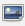
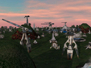
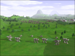
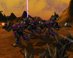
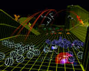
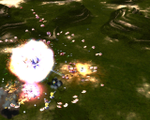
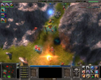
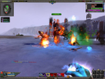
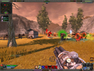

Bilder
Hinweis:
Bilder, die in Wikiartikel eingefügt werden, dürfen höchstens 150 kiB groß und 600 Pixel breit sein. Insgesamt sollten alle in einen Artikel eingefügten Bilder die Gesamtgröße von 500 kiB nicht überschreiten.
Um ein Bild zu verkleinern, empfiehlt es sich, das Bild auf eine indizierte Farbpalette mit 64 oder 256 Farben umzustellen. Weitere Informationen findet man im Artikel Wiki/Bildschirmfotos.
Das bevorzugte Dateiformat ist PNG, Bilder im JPG-Format funktionieren aber auch.
Für Bildschirmfotos von proprietärer Software bitte im Vorfeld eine Erlaubnis zur Verwendung für das Wiki einholen.
Um ein Bild in den Text einzufügen, muss zunächst eine Datei hochgeladen werden: Dazu wählt man auf der jeweiligen Wiki-Seite den Punkt "Anhänge verwalten" in der Seitenleiste am linken Rand. Anschließend kann dort ein Bild hochgeladen werden. Falls der Dateiname Leerzeichen oder andere nicht internetkonforme Zeichen enthält, kann man das Feld "Umbenennen" verwenden. Dabei ist zu beachten, dass die Dateiendung Bestandteil des Dateinamens ist, also mit angegeben werden muss.
Danach gibt es verschiedene Möglichkeiten, das Bild einzubinden. Normalerweise sollte das Bild als "einfaches Bild" eingebunden werden. Nur wenn es etwas wichtiges zu erläutern gibt, soll eine Bildunterschrift genutzt werden.
Viele Symbole aus dem Tango- oder Oxygentheme sowie dem Ubuntu- oder Systembereich sind unter Wiki/Icons zu finden.
Einfache Bilder¶
| Einfache Bilder | |
| Danach kann das Bild mit folgender Syntax eingebunden werden: | |
[[Bild(Bild.png)]] | Fügt ein (auf der aktuellen Seite) hochgeladenes Bild ein. |
[[Bild(Seitenname/Bild.png)]] | Fügt ein auf der Seite "Seitenname" hochgeladenes Bild ein. |
| Als zweiten Parameter kann man die Breite und/oder Höhe definieren: | |
[[Bild(Bild.png, 200)]] | Skaliert das Bild auf 200 Pixel Breite |
[[Bild(Bild.png, x200)]] | Skaliert das Bild auf 200 Pixel Höhe |
[[Bild(Bild.png, 200x200)]] | Skaliert das Bild auf 200 Pixel Breite und 200 Pixel Höhe. Die beiden Angaben sind jeweils Maximalangaben, das Seitenverhältnis wird dabei nicht verändert. Beispiel: Ein 500x1000 Pixel großes Bild wird auf 200x133 Pixel verkleinert) |
Als dritten Parameter (oder mit align= davor überall) kann man die Bildposition angeben: | |
[[Bild(Bild.png)]] | Das Bild ist links ausgerichtet, der Text beginnt in der nächsten Zeile |
[[Bild(Bild.png, align=left)]] | Das Bild ist links ausgerichtet, der Text fließt um das Bild herum |
[[Bild(Bild.png, align=center)]] | Das Bild ist mittig ausgerichtet, der Text beginnt in der nächsten Zeile |
[[Bild(Bild.png, align=right)]] | Das Bild ist rechts ausgerichtet, der Text fließt um das Bild herum |
| Möglich ist natürlich auch eine Kombination aus Größe und Position: | |
[[Bild(Bild.png, 300, align=right)]] | Das Bild wird auf 300px Breite skaliert und rechts ausgerichtet |
Alternativ kann man auch die Schaltfläche "Bild"  genutzt werden, um den entsprechenden Syntax einzufügen. Der Positionsparameter muss auf Englisch angegeben werden.
Bilder beschreiben¶
Es können auch Angaben gemacht werden, die ein Bild beschreiben. Dies ist insbesondere für die Darstellung in Textbrowsern oder für die Barrierefreiheit nützlich.
[[Bild(menu_grafik.png, alt="Grafik-Sektion", title="Alle Programme zum Thema Grafik")]] [[Bild(bullet.png, alt=" * ")]] [[Bild(bild.png, title="Frau mit Kind", longdesc="Frau hält in ihren dünnen mageren Armen ein glücklich dreinschauendes Kind")]] [[Bild(menu_grafik.png, alt="Grafik-Sektion", title="Alle Programme zum Thema Grafik")]]
Das alt-Attribut ist eine Pflichtangabe. Lässt man das alt-Attribut in der Syntax aus, wird automatisch der Bildname als Text verwendet. Dies entspräche der Syntax
[[Bild(bullet.png, alt="bullet.png")]]
Links zum Thema:

Externe Bilder¶
Achtung!
Im Wiki sind keine externen Bilder erwünscht! Bilder sind hier zu speichern, wenn man sie in einem Artikel verwenden will. Nur so kann eine dauerhafte Erreichbarkeit sichergestellt werden. Dabei ist unbedingt das Urheberrecht zu beachten! Eine Ausnahme stellt lediglich das Einbinden von Bildern der Domain ubuntuusers.de da, wie z.B. Teile des hier verwendeten Designs (zur Dokumentation).
| Tux, das Linux-Maskottchen |
Bild mit Bildunterschrift¶
Diese Vorlage ist für Fälle gedacht, in denen ein Bild einer Erläuterung durch eine Bildunterschrift bedarf. Sie wird wie folgt verwendet:
[[Vorlage(Bildunterschrift, BILDLINK, BILDBREITE, "Beschreibung", left|right, *-style)]]
Das Beispiel rechts wurde mit folgendem Code erzeugt:
[[Vorlage(Bildunterschrift, Wiki/Icons/tux.png, 140, "Tux, das Linux-Maskottchen", right)]]
| Bildunterschrift | |
| Option: | Beschreibung: |
BILDLINK | Angabe eines Bildes, z.B.: Wiki/Icons/tux.png |
BILDBREITE | Optional. Hiermit kann das Bild verkleinert werden. Ist die Bildbreite angegeben, wird die "Beschreibung" bei längeren Texten automatisch umgebrochen. |
"Beschreibung" | Der Text, der unter unter dem Bild zu sehen sein wird. Der Text muss in Anführungszeichen stehen. |
left|right | Optional. Entweder wird das Bild incl. Text links (left) oder rechts (right) ausgerichtet. Text fließt um die Vorlage herum. |
*-style | Optional. Einstellung der Hintergrundfarben analog zu den Tabellenfarben. Möglich sind die Angaben xfce-style, kde-style, edu-style, lxde-style und studio-style. Wird die Option ausgelassen, werden die Standardfarben verwendet. |
Bildersammlungen¶
Für Photoalben von Anwendertreffen oder Bildschirmfotos bei Spieleartikeln ist es manchmal sinnvoll, mehrere Bilder gemeinsam darzustellen. Dafür gibt es die Vorlage "Bildersammlung".
Mit Umbruch¶
Meist ist diese Variante sinnvoll. Es können wie folgt beliebig viele Bilder übergeben werden. Abhängig von der Breite des Browserfensters wird die Tabelle wie normaler Fließtext umgebrochen.
[[Vorlage(Bildersammlung, BILDHÖHE Bild1.jpg, "Beschreibung 1" Bild2.png, "Beschreibung 2" Wiki/Icons/Bild3.png, "Beschreibung 3" )]]
Wird keine Bildhöhe angegeben, so werden die Bilder automatisch auf 140 Pixel Höhe skaliert.
Beispiel¶
Quelltext:
[[Vorlage(Bildersammlung, 150 Spiele/Spring_Engine/pure1.jpg, "P.U.R.E." Spiele/Spring_Engine/ee1.jpg, "Expand&Exterminate" Spiele/Spring_Engine/CA1.jpg, "Complete Annihilation" Spiele/Spring_Engine/kernel1.jpg, "Kernel Panic" Spiele/Spring_Engine/eternal1.jpg, "Eternal Struggle" Spiele/Spring_Engine/evo1.jpg, "Evolution RTS" )]]
Resultat:
|  |
| P.U.R.E. |
|  |
| Expand&Exterminate |
|  |
| Complete Annihilation |
|  |
| Kernel Panic |
| Eternal Struggle |
|  |
| Evolution RTS |
Im Fließtext¶
|  |  |  |
| Commanderansicht | Spieleransicht | Waffenansicht |
Möchte man, das der Text wie bei einfachen Bildern um die Bildertabelle herum fließt, kann man der Bildhöhenangabe left oder right voranstellen. Da diese Tabellen starr sind (also nicht umbrechen können) sollten hier maximal drei Bilder und eine Breite von 200 Pixeln pro Bild nicht überschritten werden.
Die allgemeine Syntax ist
[[Vorlage(Bildersammlung, left|right, BILDHÖHE Bild1.jpg, "Beschreibung 1" Bild2.png, "Beschreibung 2" Wiki/Icons/Bild3.png, "Beschreibung 3" )]]
Lässt man hier die Höhenangabe weg, werden die Bilder nicht skaliert, sondern in ihrer tatsächlichen Auflösung dargestellt.
Die oben angezeigte Tabelle wurde mit folgendem Code erzeugt:
[[Vorlage(Bildersammlung, right, 100, Archiv/Spiele/Savage_2/ss129.jpg, "Commanderansicht" Archiv/Spiele/Savage_2/ss117.jpg, "Spieleransicht" Archiv/Spiele/Savage_2/ss115.jpg, "Waffenansicht" )]]
- Erstellt mit Inyoka
-
 2004 – 2017 ubuntuusers.de • Einige Rechte vorbehalten
2004 – 2017 ubuntuusers.de • Einige Rechte vorbehalten
Lizenz • Kontakt • Datenschutz • Impressum • Serverstatus -
Serverhousing gespendet von